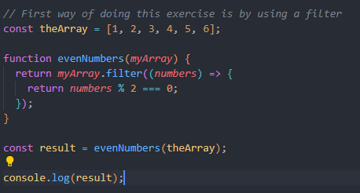

Exercise 2
1. Explain the concept of closures in JavaScript.
A closure in JavaScript occurs when a function is defined inside another function, and the inner function retains access to the outer function's variables and the global scope. This feature allows the enclosed function to "close over" the surrounding environment, maintaining access to the variables even after the outer function has completed execution. Closures are particularly useful for creating data privacy in JavaScript. By encapsulating variables within a closure, you can restrict their access, preventing unintended modifications from outside the closure. This capability is widely employed in various programming patterns, including the creation of private variables and the implementation of the module pattern. In summary, closures in JavaScript provide a mechanism for functions to retain access to the scope in which they were created, offering benefits such as data encapsulation, privacy, and the ability to create modular and maintainable code.
2. What is the difference between let, const, and var in JavaScript?
Difference between let and const and var is in their scope rules and how it is possible for them to be reassigned. Let and var lets you create variables that can be reassigned. The difference however is in their scope, let is block scoped and var is function scoped. Const is used when we want a variables value to be constant. However arrays and objects value can still be changed.
3. Write a function that takes an array of numbers as an argument and returns a new array with only the even numbers.
Result: 2,4,6